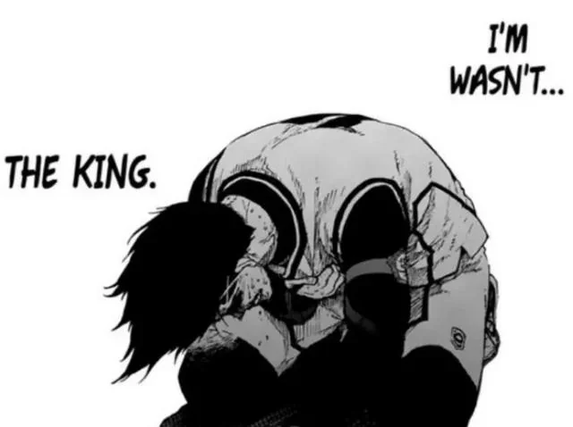
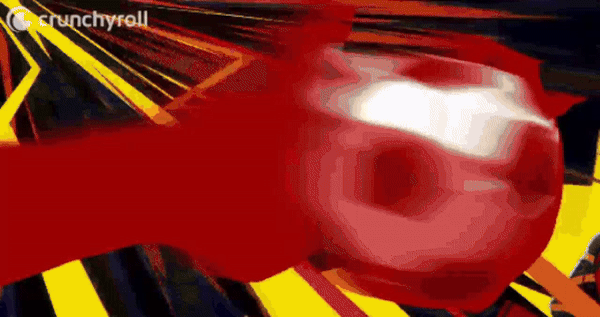

My first impression of this character is neutral, maybe lower than that. He looks like a standard ugly-looking antagonist whose only purpose is to be the protagonist's obstacle, once the protag is over it, this character will not be relevant ever again (At most is to be a comic relief). This dude is forgettable in the beginning IMO.
During the 2nd selection 3v3 battle, his actions felt quite hard to stand. Barou has been too stubborn to pass the ball, which caused the ball to be stolen by the opponent's team very easily. Despite that, Barou still insisted he should continue handling the ball. As annoying as this is, instead of making Barou change his mind, Isagi came up with another idea. By using Barou's path as a guise, he pretended to pass the ball to him (which fooled Barou also), but in fact, he passed to Nagi! Isagi's team now caught up with the opponents, but Barou was pretty pissed. At one point, Barou had the ball, but one of his opponent, Chigiri, was charging at him at high speed. Fortunately, but sadly, Isagi was at the front, staring at him. In instinct, Barou had no choice but to finally pass the ball. That moment, Barou has lost all his confidence and pride, what's left is his broken hope.

A typo in the panel has become a meme in the Blue Lock community
It felt like the direction was within my expectations, Isagi learnt to use his teammate Barou's skills, "devouring" him, Barou even fell into despair realising "I'm wasn't the king" /ref. Welp, that is a 'fun' ride, see you never again Barou, I guess. Isagi's team was very close to winning, they kicked off the ball from the opposing team, and Barou caught it. Isagi and Nagi was running in front of him, all Barou needed to do is to pass the ball, accepting Isagi's "light"
Except he refused.
If he passed the ball, he wouldn't truely grow. The only thing that would grow is Isagi's light, and Barou will not survive in Blue Lock. If that happens, the only thing he could do is watch the shining protagonist being the star, and Barou silently watching the football livestream, drinking a can of beer...
He "devoured" Isagi. Using Isagi's "light", he avoid the opponent's defense with his fast charge and chop feint, with Isagi's movement covering Barou's, the opposing team had no way to stop him. Finally, with Barou's powerful pick, his hunger for a goal is satiated.
Back then, I thought Barou was genuinely going to pass the ball. But I felt something was off, the plot before this was intriguing and mind-blowing, Wouldn't it be strange if this part went so mediocre like that? If the author let Barou go the path most people expected, I don't think I would enjoy Barou as a character at all. Heck, I might even be let down by the plot of Blue Lock. I'm so glad that Barou became the character now.
What's better is that in the future matches, when Barou does something, it's always something spectacular and unexpecting. ( Spoilers for U20 arc: Especially when Ego announced that Barou will be subbed into the U20 match, I would've been screaming if it weren't 2 in the morning. Barou being Barou, when Ego instructed him to not follow the team's instructions, Barou said he was already planning to do that, man I love him. I proceeded to scream harder in my brain when Barou scored that goal. )
And in the newest arc, Barou's performance and character arc are as great as usual. ( Spoilers for Neo Egoist League arc: When fighting against Ubers, it looks like Barou has listened to his teacher Snuffy's advice to work for the team. It is safe and effective, but it isn't flashy like Barou's usual plays, and Barou's shots even had to be blocked 4 times. Even Isagi pointed out that Barou has become boring... Oh famous last words! It turned out Barou has been planning to turn against Snuffy's design from the get go, and the fact he kept being blocked made him decide to quite follow's his teacher's advice. With Barou's leadership, he has taken over the entirety of Ubers design. This also activated Snuffy's character developement, which I will save for you to read yourself :3. It is a shame that Ubers still lost. Hot take: Isagi's team Bastard München character arcs range from mid and kinda bad, and the fact they win so much is by plot armor. )
His design may not appeal to most people, but his development is perhaps one of the best among all fictional characters I've seen. I also really enjoy the gap moe, it feels unusual seeing a hunk being so strict about cleaning and lifestyles, people often call him Maid Barou LOL. Those who also appreciate Barou would also agree that, man he is so badass.
If you have never watched or read Blue Lock, you may be very confused. "Why is a football match so dramatic in here?" or "What do you MEAN by 'devouring'??" Well that's Blue Lock for you.

( This is my favorite part of the 2nd BLLK opening )